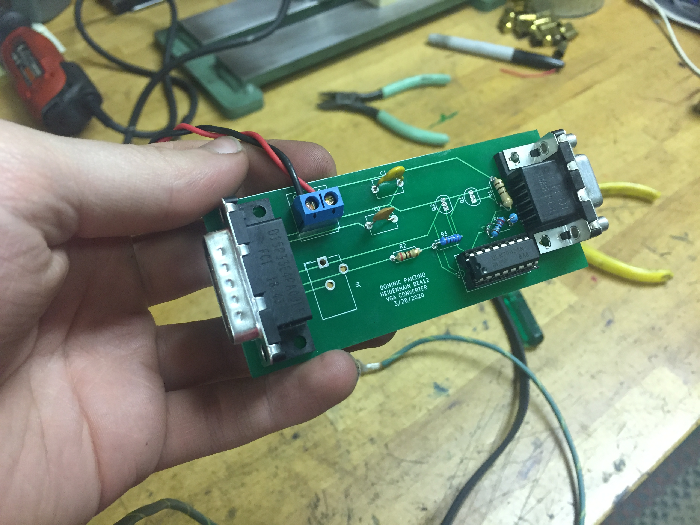

Heidenhain Monitor Conversion Circuit
Converting a proprietary signal format to standard VGA

The final version of the converter, on a custom PCB.
Our Hermle CNC machine was having some issues with it's CRT monitor, and we figured it was approaching it's end of life. Replacement monitors were surprisingly available, but were unreasonably expensive. Looking into the manual for the Heidenhain control, I was impressed to see that the manual included a complete specification of the signal format that they used, complete with oscilliscope traces and explainations. The format was non-standard, but similar enough to VGA that I figured I could do the conversion even with my limited electronics knowledge. I basically just had to invert the signals, as the Heidenhain format used a high signal for off and low for on (it was also a monochromatic format), and also shift the voltages down to the much lower voltage used by VGA. I also had to distribute the signal across the three color channels in VGA, to get a white output. I considered using some resistors to distribute the signal across the color channels unevenly, to get a VGA output that was amber, like the original CRT, but ultimately just went with the easy method.
The initial mock-up successfully sending VGA to a standard monitor. At this stage, rise time was limited, so some the white areas were shrunk horizontally. This was fixed later when parasitic capacitance was reduced.
Initially the design was mocked up on a breadboard to verify that the idea was feasible, and once it was successfully working on the breadboard I designed a custom PCB for the circuit, which I designed to allow for several different contingencies, just in case there were differences between the breadboard and the PCB. This ended up being good, because I did need to slightly change how I was doing the inversion step, from using single MOSFETs to using an IC with darlington transistor pairs. The MOSFETs had trouble switching fast enough to get good results. The PCB was ultimately put in a 3D-printed enclosure, put inside the monitor enclosure, and powered by a 5V power supply plugged into a convenience outlet that was also within the monitor enclosure. The ailing CRT was removed from the enclosure, and an old computer monitor was installed in it's place. The new monitor conveniently fit surprisingly well in the new opening, but with much larger screen space.
The new computer monitor installed in the console, running with the conversion circuit. The very top of the monitor is cut off a bit, but that was a tolerable inconvenience.